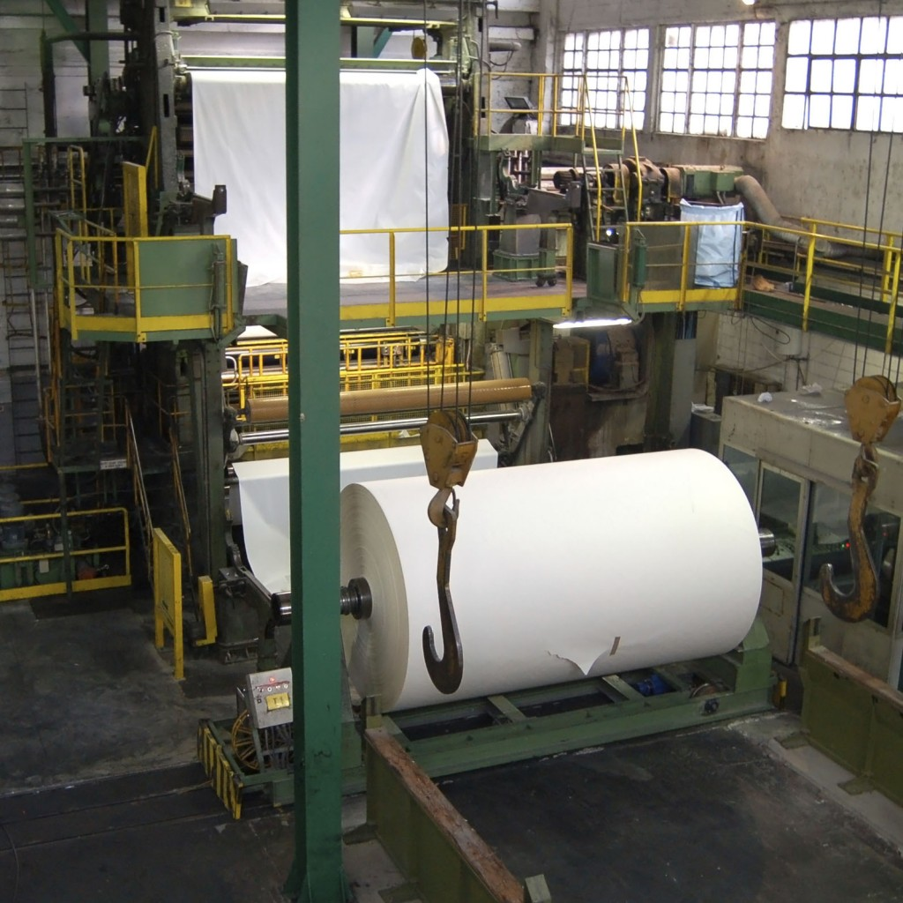
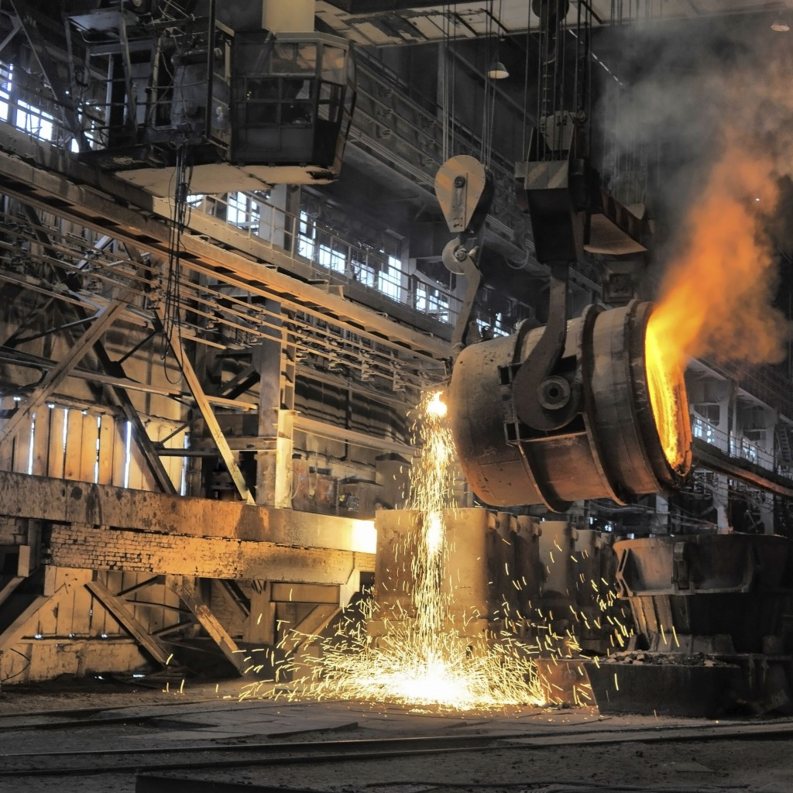

25年前，我们发明了独有的维护管理与实施方法。从此以后，我们已与多种不同行业的客户一起共同努力，在管理层面和车间层面帮助他们发掘维护服务的全部潜力并实现长期的商业利益。
尽管您可以在任何维护成本高昂的行业中看到我们的身影，我们的主要客户更多是分布在下列几大行业中。

纸浆与造纸
几十年来，我们持续与世界各地的纸浆与造纸生产商联手合作，成为广受信赖的维护服务外包合作伙伴之一。我们全权负责多条生产线的维护，包括处于全球数家规模最大、效率最高的工厂的生产线。我们能够在整个工厂开发并实施我们的维护方法，同时优化资金和营运开支并实现效果显著的长期可持续发展。
采矿与矿产
我们了解采矿和矿产行业所面临的独特的维护和业务挑战。恶劣的环境以及对安全、设备可靠性和效率的极度重视，更加体现出世界级维护服务的重要性。我们拥有多年为数家业内领先公司工作的经验，而实践证明我们能够为新建和改扩建项目创造显著且可持续的价值。


冶金
我们拥有承接冶金行业维护服务外包项目的丰富经验，主要合作对象包括铝冶炼厂、铜冶炼厂、钢铁厂以及镍精炼厂。我们所关注的重点通常在于提高资本回报率，其中的关键在于提高利用率并降低成本。
化工与石油
我们是全球化工与石油行业中广获信赖的服务供应商。我们拥有在过去20年为超过40家工厂新建和改扩建项目提供维护服务外包和管理的经验。我们的流程、工具和能力都能够满足行业的独特需求。


离散制造
我们为各种不同的离散制造企业提供维护服务外包，为每一条生产线派驻工作积极、反应迅速且灵活的专业人才，为需要精细处理的设备提供连续上调、下调与更换服务。
食品与饮料
我们可提供全面的维护外包服务套餐，帮助食品与饮料生产商降低能源消耗和废物排放，同时更加有效的对设备和流程进行管理。

服务中心
我们在若干国家设立了服务中心，为全国性服务站网络管理公共设施和技术设备的整体维护。我们的呼叫中心接收来自服务站工作人员的所有服务请求，并为其分派最近的维护团队，从而实现随时随地的快速响应。
石油与天然气
作为经验丰富的服务供应商，我们不断为石油与天然气行业上游和下游设施开发新的服务项目，从而在支持不断变化的行业需求方面具有得天独厚的优势。
我们的流程、工具和能力能够满足行业的独特需求，并经过实践证明能够为全球客户创造真正的价值。


公共设施
除了为多种公共设施（包括传统型和可再生能源发电厂）提供维护服务外，我们还掌握了有关自动化、仪器仪表以及控制系统等的先进知识，从而能够在提供维护服务的基础上进而全权负责整个公共设施的运营。